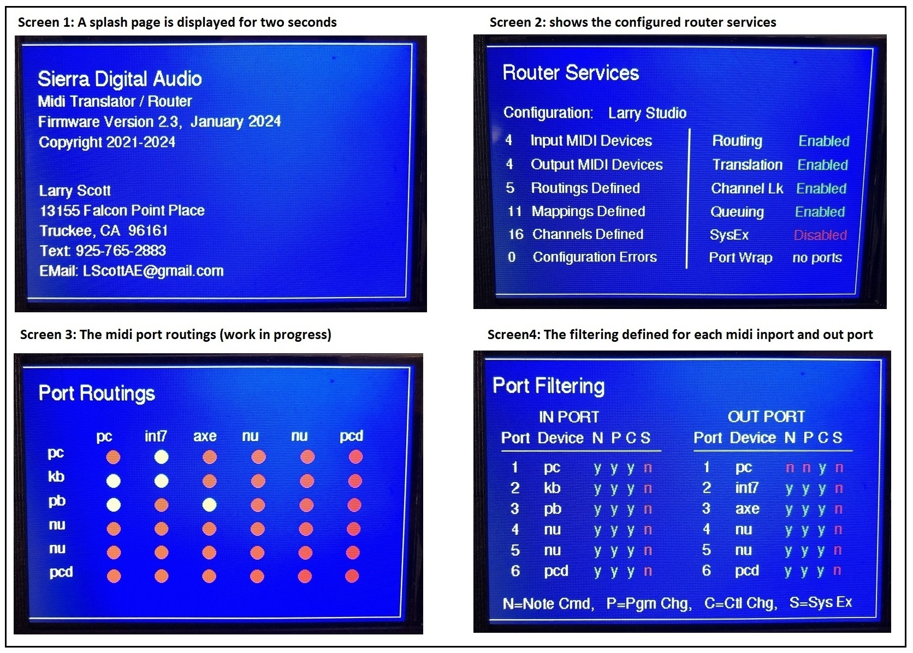
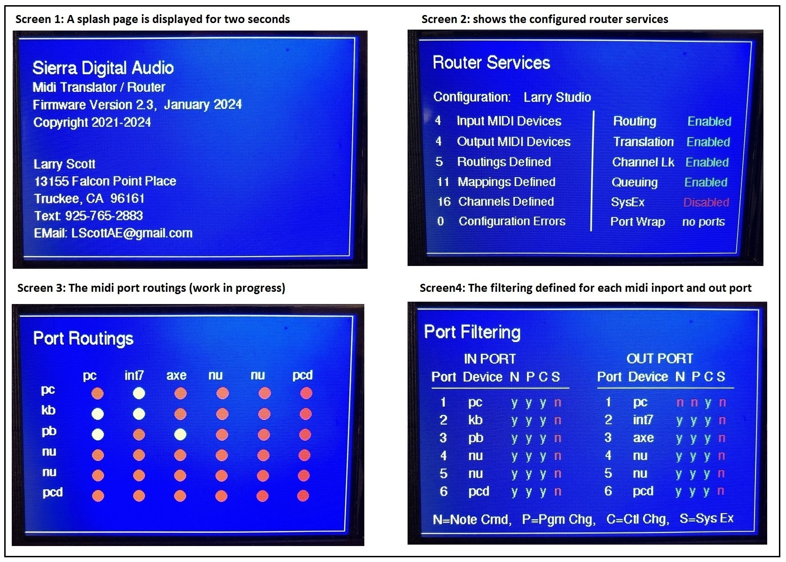

|
13155 Falcon Point Place
Truckee, CA 96161 USA
|
cell: 925-765-2885
email: LScottAE@gmail.com
|
|
|

|
- Midi System Designs
- Embedded Systems Programming
- Mechanical CAD and 3D Printing
- Custom High Power PC Builds
|
|
|
| |
Wikipedia MIDI Definition
Click on this arrow for very basic Midi overview
MIDI
(Musical Instrument Digital Interface) is a technical standard (communication protocol) that allows musical devices (instruments, computers,
recording software (DAW), pedalboards, effects processors, and more) to communicate with each other. I will oversimplify and say that
Midi has three main purposes:
First, Midi can be used to record and play musical NOTE information. For example, when you press a note on a digital
piano keyboard, the note and velocity (pressure) is converted to digital Midi data which can be recorded (and played back) by your
computer's recording (DAW) software. Software such as Pro Tools, Reaper, Cubase, ....
Second, your digital piano keyboard likely has button, sliders, foot pedals, and wheels. In Midi jargon, are called 'continuouse controllers'.
Controllers do not change the note being played but rather transmit control information' to the listening device.
For example, your keyboard may have a slider that you use to control the volume of your keyboard.
This slider does not affect the note being played, but 'controls' (the volume) of the note being played by sending Midi 'continuous
controller 7' information to your PC, amplifier, or PA system. The listening device recognizes the volume controller and adjusts the
keyboard volume accordingly.
Third, Midi provides a free form Midi format called 'System Exclusive' which allows musical equipment manaufacturers
to provide custom manufacturer specific functions to their musical equipment. For example, a guitar effects processor manufacturer may define
a set of custom Midi commands used to backup and restore their effects processor configuration to your PC. Each Midi device manufacturer has
proprietary and unique device architecture. Note information and Continuous Controller information is standardized accross all Midi manufacturers,
but Midi commands, such as device configuration backup and restore to your PC, are different across all equiment manufacturers, thus the Midi SysEx
protocol was developed to give Midi equipment manufactures the ability to custom define Midi commands to control their proprietary equipment.
A single MIDI cable can carry up to sixteen channels of MIDI data, each of which can be routed to a separate device.
Each interaction with a key, button, knob or slider is converted into a MIDI event, which specifies musical instructions, such as a note's pitch,
timing and loudness. One common MIDI application is to play a MIDI keyboard or other controller and use it to trigger a digital sound module
(which contains synthesized musical sounds) to generate sounds, which the audience hears produced by a keyboard amplifier.
MIDI data can be transferred via MIDI or USB cable, or recorded to a sequencer or digital audio workstation to be recorded, edited, or played back.
MidiXLate Midi Router
Midi Routing is the process of forwarding midi packets (digitally encoded music notes and control messages) from one musical device to another musical device.
Typically, Midi Routing is accomplished by connecting all Midi devices to a midi 'hub' (or 'switch') and 'broadcasting' all midi commands to all midi devices
connected to the midi hub / switch. This is technically not routing because midi commands are 'broadcast', not 'routed' to their intended destination.
Obviously, the hub / switch approach is not optimal because it generates excessive midi network traffic and Midi device configuration is overly
complicated to setup (to 'filtering' out what is intended for each midi device) and troubleshoot.
The MidiXLate router is a true router, meaning individual midi packets (information) are inspected and 'routed' to their intended destinations.
Routing eliminates flooding the midi network with extraneous (unused) midi data. Lastly, the sending and receiving midi devices are much simpler to configure,
because the midi information received at a midi device is guaranteed to be intended solely for that midi device. Routing midi data is much more efficient
and simpler to configure than hub broadcasting of midi data.
Click on this arrow for more MidiXLate router benefits
In addition to Midi routing, the MidiXLate router provides Network Address Translation (NAT) features such as 'translating' midi data from one midi format
(such as note data) to another Midi format (such as continuous controller) and Channel Locking where you can lock midi data sent out an output port
to a particular midi channel. Lastly, with MidiXLate, you can blanket select, port select, or command select which midi functions (message formats) will
be processed by the router. This has huge implications allowing you to define Midi configurations not possible with Midi hubs. For example, assume a
Roland Integra 7 tone generator needs simultaneous input from a DAW and keyboard simultaneous. Further assume the DAW midi data needs to be stripped
of Continueous Control midi before sending to the Roland Integra 7 tone generator, where keyboard continuous control data (such as volume sliders and patch
select control) are required by the DAW. Next, further require that the Integra 7 tone is input to the DAW for recording. This configuration is very difficult
to setup using a midi hub, but very simple using the MidiXLate router.
As for router performance, the heart of the MidiXLate router is a blinding fast Atmel SAM3X8E ARM Cortex-M3 processor running at 84 MHz, which guarantee's undetectible latency,
The MidiXLate router was the result of my many home studio music production issues. I found I could not adequately simultaneously configure or control
my many midi devices without the routing, translation, and channel locking features provided by the MidiXLate midi router. These routers are custom builds.
I typically build 10-20 routers per year. If you would like to 'try before buy' a MidiXLate router, send me an email at
LScottAE@gmail.com.
I rent a demo router for $100 month. Customer pays for shipping (both ways). I you want to purchase a new router, the purchase price is $850.
I build and test these routers in the mountains of northern California. Unfortunately, the cost of materials and time required to build a MidiXLate
router is not going to make me rich, but it is a passion of mine. My customers receive excellent phone support and priority for requested customizations.
|
|
MidiControl Software (for Windows 10 and above)
FREE!
Have you every wanted to catalog and control your midi devices from your Windows PC?
Sierra Digital Audio's FREE MidiControl program provides Windows PC control of midi devices using 'program change',
'continuous control', or 'system exclusive' messages.
MidiControl is not designed to play midi files, rather to control midi devices from your desktop.
A typical musician likely has many midi devices such as keyboards, guitar effects, drum machines, voice processors, ....
For example, assume you have a live gig and every song requires a different keyboad patch, drum pathch, guitar patch, guitar volume, ....
With MidiControl, you can define the 'tabs' by song and list all the midi commands required to setup that song.
Alternatively, as shown in the example screens, each tab can represent a musical device and the midi commands to control the device.
To start, connect all of your midi devices to your computer with a USB hub .
Next, download MidiControl, install Scott MidiControl (FREE!), and configure MidiControl.
You now have a simple means to control all of your Midi devices from your PC!
|
|
|
|
Click on picture to open larger image in new window. Click at thumbnail under picture to view next picture.


|
| |
 |
|
 |
|
 |
|
 |
|
 |
|
 |
|
|
| |
New features will be added as MidiControl evolves. If you have a particular feature you would like added, please
email us.
|
|
MidiOrganize Software (for Windows 10 and above)
FREE!
MidiOrganize provides a FREE and simple means to organize your midi drum loops and optimize the performance and flexibility of your DAW mixes!
MidiOrganize is a PC midi file organizer (not a VST) designed to catalog midi drum loops and midi (guitar, bass, horn,...) patches.
There are many license based drum loop VSTs available for ProTools, Reaper, Cubase,...
Most drum VSTs typically are very expensive, must be licensed and require your PC to be connected to the internet,
and (in my case, the most irritating issue) these licensed VSTs place a heavy burden on the CPU introducing
latency and popping in my final mix. MidiOrganize is a FREE standalone PC application. You may choose to download Groove Monkee's excellent
FREE drumloops
and easily configure for use with MidiOrganize. Additionally, you can use MidiOrganize with any of your purchased drum loops.
My PC rack computer is a music optimized PC (32 gig memory, 1TB HD, Intel 7 CPU, Reaper).
I typically start to see performance degredation after only loading a few drum VSTs.
VSTs do have benefits and conveniences, but I prefer to limit my VST usage to optimize my
performance and maximize patch selection flexibilty during playback.
Midi Organize is a stand alone PC application. During setup, you specify the directories of all your drum loops.
When working with your DAW (ProTools, Reaper, CuBase,...) you drag and drop MidiOrganize drum tracks into you DAW drum tack.
Unlike the VST which will play the drum track, set your drum track to route the drum midi to your external drum machine.
In my case, I have a Yamaha MU15 and a Roland Integra7.
The MU15 (or Integra7) audio output is an input on my mixer which is in turn recorded by my DAW.
Not only is this a FREE solution, but the PC CPU performance hit on your DAW is significantly reduced.
In my case, with Reaper, the final mix rendered audio is free of chop, pops, and dropouts due to VST memory usage.
MidiOrganize follows the format of EZ Drummer. If you understand the drilldown structure of EZ Drummer, MidiOrganize will feel very natural.
|
|
|
|
Click on picture to open larger image in new window. Click at thumbnail under picture to view next picture.

|
| |
|
|
|
|
|
|
|
|
|
|
|
|
|
| |
New features will be added as Scott MidiControl evolves. If you have a particular feature you would like added, please
email us.
|
|
|

 
